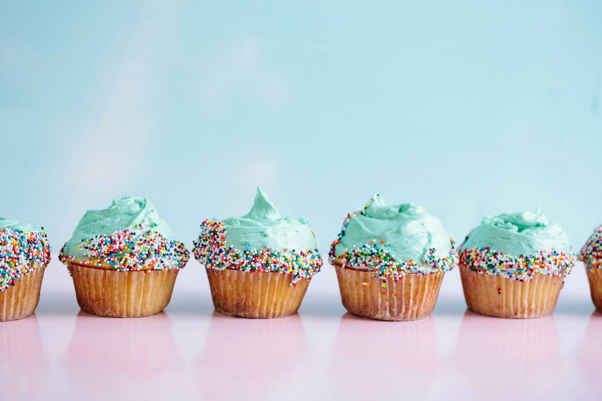
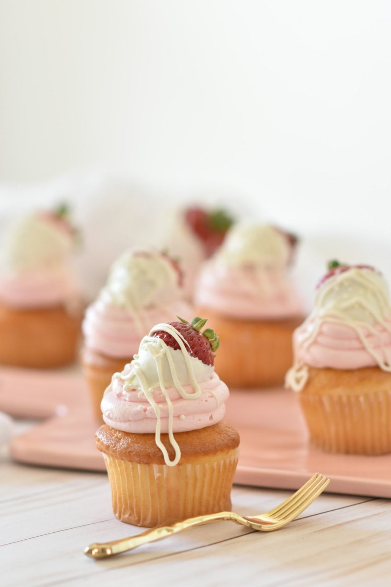

Candybar
Маленькі десерти з великим характером. Крутніть ручку солодкого автомата — він підкаже, з чого почати. Або збирайте свій стіл із вітрини нижче.
- 15десертів
у меню - від €18за солодкий
бокс - 10–60гостей — candy
bar під ключ

автомат каже: вам —
Капкейки
Candy bar під ключ: рахуємо 3–4 десерти на гостя, підбираємо кольори й самі розставляємо. Посуньте вишеньку — і стіл наповниться.
24гості
≈ 84 десерти на стіл
* доставка й сетап — за розрахунком, залежить від міста й часу
Найкрасивіші солодкі столи — монохромні. Оберіть фарбу, і ми пофарбуємо під неї крем, капсули, макарони й навіть гірлянду.
Пудра — ніжно, по-весільному — рожевий з вишневим акцентом
Candy bar — маленький проєкт, який ми ведемо з вами від першого повідомлення до останньої таблички на столі. Гортайте — календар відривається сам.
за три тижні
21день до святаБриф і палітра
Розповідаєте про свято: гостей, кольори, стиль, локацію. Надсилаєте фото декору чи запрошення — ми підбираємо палітру й склад столу.

за два тижні
14днів до святаМеню й кошторис
Пропонуємо 2–3 варіанти складу з точною ціною. Можна взяти дегустаційний сет, щоб обрати смаки разом із родиною.

за два дні
2дні до святаПечемо
Макарони дозрівають добу, тому стартуємо заздалегідь. Капкейки й трайфли готуємо в день видачі або напередодні — тільки так вони свіжі.

ранок свята
Хдень святаПакування й дорога
Кожен вид десерту — в окремому боксі з вкладишами, щоб нічого не зсунулось. Веземо в прохолоді й рівно, як ювелірку.

за годину до гостей
60хвилин до гостейСетап на місці
Для пакету L розставляємо стійки, таблички й торт-акцент, фотографуємо результат — і зникаємо до того, як прийдуть гості.


посуньте вишню по гірлянді місяців ↔

у вітрині
квітень — травень
Ніжність і перші ягоди
Коли в Нідерландах цвітуть тюльпани, ми переходимо на легкі креми, ревінь і першу полуницю. Пудрові кольори, квіткові капсули й багато вершків.
- Полуниця–ревіньтрайфл · капкейк
- Лимон–бузинамакарон
- Ваніль–фіалкакапкейк з квітковим декором
червень — серпень
Кислинка й багато ягід
Малина, лохина, чорна смородина й абрикоси — найсезонніший час для candy bar на вулиці. Додаємо легкі мусові трайфли й лимонне безе.
- Малина–лічімакарон · трайфл
- Лимонне безетарталетка
- Лохина–йогурткапкейк
вересень — листопад
Карамель і спеції
Солона карамель, груша, кориця й горіхи. Теплі, затишні смаки для днів народження, коли за вікном дощ, а всередині — свічки й какао.
- Солона карамельмакарон · брауні
- Груша–корицякапкейк
- Гарбуз–спеціїкапкейк з кремчизом
грудень — березень
Шоколад і вишня
Глибокий темний шоколад, п'яна вишня, апельсин і пряники. Святкові бокси для колег, Sinterklaas і новорічні candy bar у вишнево-золотій палітрі.
- Вишня–шоколадкапкейк · трайфл
- Апельсин–кардамонмакарон
- Пряне печивобокс до кави
Базове меню — цілий рік, сезонні смаки уточнюйте в менеджера.
За скільки замовляти десерти й candy bar?
Бокси й сети — за 2–3 дні. Candy bar — бажано за тиждень, а у вихідні травня–вересня та грудня краще за 2–3 тижні: макаронам потрібна доба на дозрівання, а палітру ми підбираємо індивідуально.
Скільки десертів брати на гостя?
Якщо є торт — 2–3 десерти на гостя. Якщо candy bar замість торта — 4–5. Для дитячих свят рахуйте 2 капкейки на дитину й не забудьте про батьків 🙂
Як довго зберігаються макарони й капкейки?
Макарони — до 5 днів у холодильнику в закритій коробці, найсмачніші на 2–3 день. Капкейки й трайфли — до 48 годин при +2…+6 °C. Діставайте за 20–30 хвилин до подачі.
Чи можна змішати десерти з різних пакетів?
Так. Пакети S, M і L — лише зручна відправна точка. Ви можете збирати стіл вручну у вітрині вище або написати менеджеру — складемо меню під ваш бюджет.
Чи є варіанти без горіхів?
Макарони роблять на мигдальному борошні, тому вони точно з горіхами. Капкейки, брауні й донати можна приготувати без горіхових начинок, але ми працюємо в одному цеху, тож сліди можливі. Напишіть про алергії в коментарі.
Не знайшли відповіді? Наш чат-помічник на сторінці FAQ знає ще понад 40.